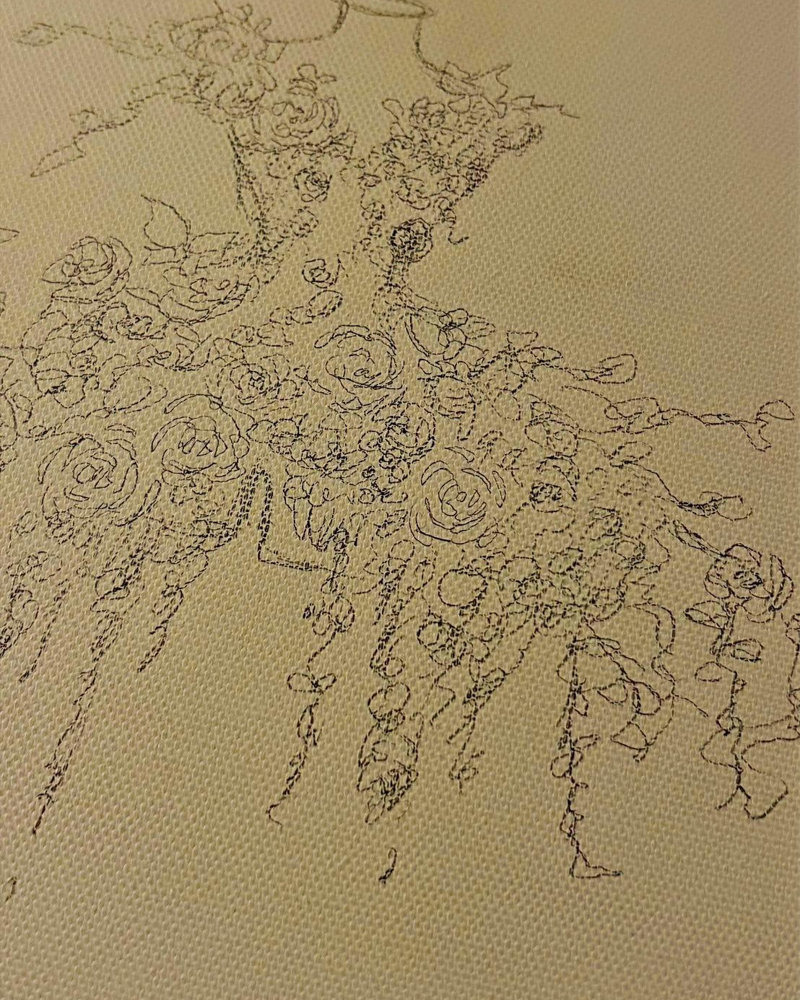
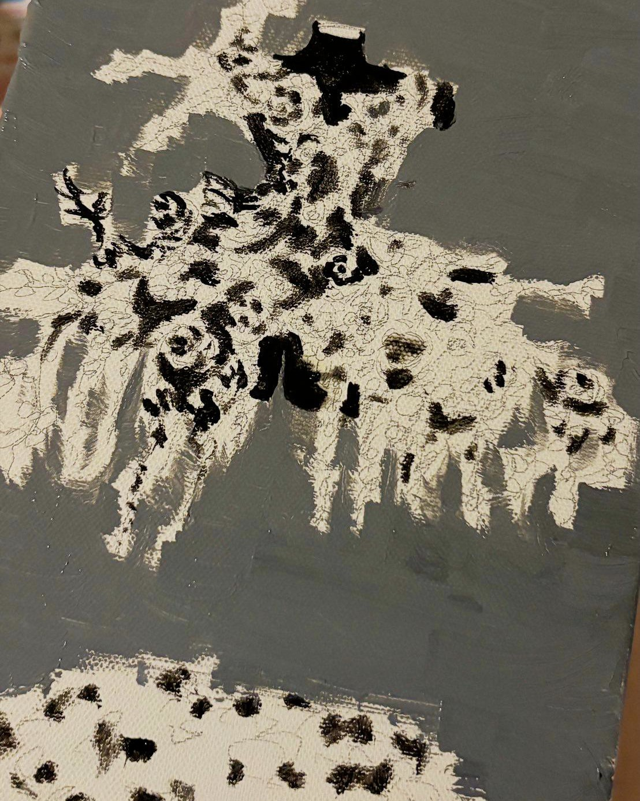
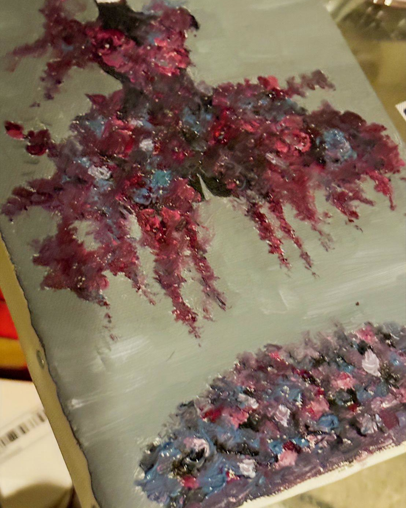

橋本真希：「お花と、私の好きなファッションを融合してみました」
あめ（東京藝術大学）
シックな花で構成された衣装と、宙に浮いたトルソーのモチーフからアイドルとしての、橋本さんの舞台での一つの心象を読み解けるように思います。選ばれた花の配色、葉の品あるふるまいから、開演前にご自身と一つになりこれから舞台で立つ衣装と向き合うことの緊張感。袖を通すことで衣装に込められた想いと心を共鳴させる瞬間のまなざしが表れているのではないかと読み取りました。宙に浮いているトルソーの図像も、まさに今から衣装の心と対話し、理解していく瞬間そのものを表しているのではないかと考えました。ぜひ、意図をお伺いしたいです。
橋本真希より
制作時は明確な答えを用意するというより、「服と人との間にある目に見えない対話」を描きたいと思っていました。そのため、いただいた「衣装の心と対話する瞬間」という解釈はとても興味深く、むしろ私自身が作品から教えていただいたような感覚です。作品は完成した時点で鑑賞者のものでもあると思っているので、そのように受け取っていただけたことを嬉しく思います。
Read More / Close